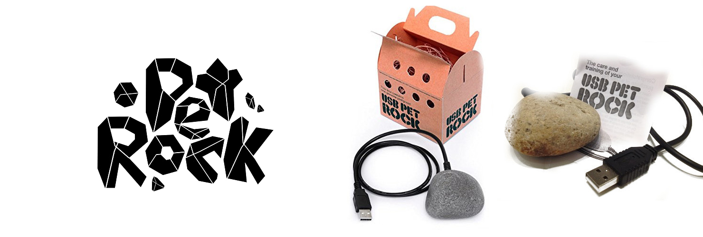

PetRock
Kit Pet Rock
Ventajas sobre otras mascotas

Este es el maravilloso kit de la pet rock, el cual consiste en su cajita, hecha para que respire, su cama de paja y la mascota pet rock.
Leer más ...Lo que esperabas, tu Pet Rock, ahora 2.0
Última actualización, hace una hora.
Tu Pet Rock, como nunca antes lo pensaste. Y es que, ¿acaso tus mascotas tradicionales cuentan con puertos usb?
Leer más ...